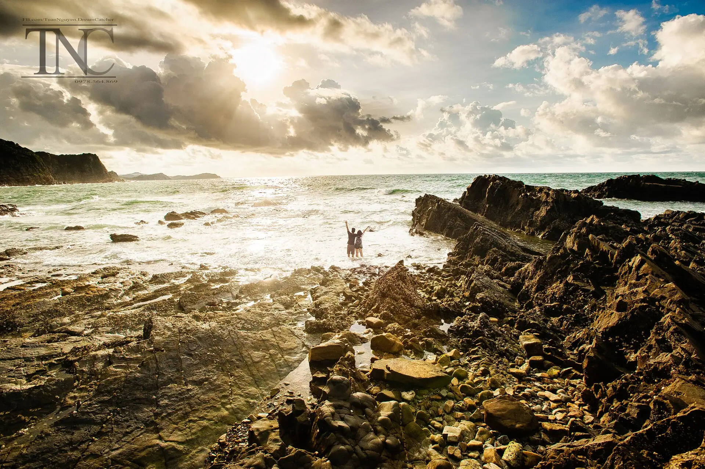

Sá sùng
Sá sùng tươi xào tỏi, nướng hoặc phơi khô làm quà – đặc sản quý.
Ảnh minh họa: Hải sản nướng Có ảnh thật của món này? Gửi cho Việt Travel
Quần đảo Cô Tô cách cảng Cái Rồng (Vân Đồn) khoảng 1,5 giờ tàu cao tốc, nổi tiếng với bãi Hồng Vàn, bãi Vàn Chảy cát trắng mịn, rừng phi lao và con đường ven biển uốn lượn. Nơi đây có ngọn hải đăng ngắm toàn đảo, bãi đá Cầu Mỵ bị sóng bào mòn và đảo Cô Tô Con hoang sơ – khi triều rút có thể đi bộ trên dải cát nối hai đảo.
Đang tải thời tiết...
Bấm vào một tháng để xem có nên đi không
Học sinh nghỉ hè, các bãi biển đông nhất năm.
Đi giữa tuần và đặt phòng sớm để có giá tốt.
Lễ theo âm lịch đổi ngày dương mỗi năm – kiểm tra lịch chính thức trước khi đi.
Sá sùng tươi xào tỏi, nướng hoặc phơi khô làm quà – đặc sản quý.
Ảnh minh họa: Hải sản nướng Có ảnh thật của món này? Gửi cho Việt TravelMực câu đêm nướng, hấp gừng hoặc làm mực một nắng.
Ảnh minh họa: Mực nướng Có ảnh thật của món này? Gửi cho Việt TravelLoài cua đá thịt chắc, hấp hoặc rang me.
Ảnh minh họa: Cua biển hấp Có ảnh thật của món này? Gửi cho Việt TravelBữa sáng quen thuộc của người đảo với chả mực giã tay.
Ảnh minh họa: Bánh cuốn Có ảnh thật của món này? Gửi cho Việt TravelHải sản tươi chế biến tại chỗ
Thị trấn Cô Tô Cập nhật 10/2026 Báo saiSá sùng xào, mực nướng, cù kỳ hấp
Đường ven biển, thị trấn Cô Tô Cập nhật 10/2026 Báo saiBánh cuốn chả mực, bún hải sản
Thị trấn Cô Tô Cập nhật 10/2026 Báo saiBún hải sản, bún sá sùng
Thị trấn Cô Tô Cập nhật 10/2026 Báo saiMực nướng, mực một nắng
Thị trấn Cô Tô Cập nhật 10/2026 Báo saiCù kỳ hấp, rang me
Gần cảng Cô Tô Cập nhật 10/2026 Báo saiCơm cá biển, canh rau
Thị trấn Cô Tô Cập nhật 10/2026 Báo saiỐc, tu hài nướng
Gần bãi Vàn Chảy, Cô Tô Cập nhật 10/2026 Báo saiGiá tham khảo mỗi người. Bấm địa chỉ để mở Google Maps xem giờ mở cửa và đánh giá mới nhất.
Con đường ven biển qua rừng phi lao, bãi Vàn Chảy, bãi Hồng Vàn.
Những phiến đá bị sóng bào mòn đủ hình thù khi mặt trời lên.
Ngắm toàn cảnh đảo và biển Đông Bắc từ trên cao.
Theo dải cát nối hai đảo khi thủy triều rút, cắm trại qua đêm.
Tự gợi ý theo điểm đến và tháng đi (chọn ngày khởi hành ở phần Lịch trình để đổi tháng). Đánh dấu để ghi nhớ món đã chuẩn bị.
Thấy giá vé, giờ mở cửa hay quán đã thay đổi? Báo sai
400k–1,2tr / đêm
Gần cảng, chợ và quán ăn.
300k–800k / đêm
Yên tĩnh, sát biển.
900k–2,5tr / đêm
Bungalow giữa rừng phi lao.
Từ Hà Nội đi limousine ~3,5 giờ tới cảng Cái Rồng (Vân Đồn), tàu cao tốc ~1,5 giờ ra Cô Tô; hoặc bay tới sân bay Vân Đồn (VDO).
| Từ Hà Nội |
|
|---|---|
| Từ Đà Nẵng |
|
| Từ TP. Hồ Chí Minh |
|
Thời gian ước tính lúc di chuyển, giá một chiều / người mức tiết kiệm – tham khảo. Phương án in đậm là gợi ý.
Giá phòng tham khảo cho 2 người/đêm, cao hơn vào lễ Tết và cuối tuần. Việt Travel không nhận hoa hồng từ các trang đặt chỗ.
Việt Travel · Quảng Ninh · Thời điểm đẹp: Tháng 4 – 9
Từ Hà Nội đi limousine ~3,5 giờ tới cảng Cái Rồng (Vân Đồn).
Tàu cao tốc ~1,5 giờ ra Cô Tô, nhận phòng, thuê xe đạp hoặc xe điện.
Dạo phố đêm một chút rồi về nơi ở nghỉ ngơi
Đón bình minh ở bãi đá Cầu Mỵ.
Tắm biển Hồng Vàn, đạp xe con đường ven biển qua rừng phi lao.
Lên hải đăng Cô Tô ngắm hoàng hôn toàn đảo.
Dạo phố đêm một chút rồi về nơi ở nghỉ ngơi
Mang theo bánh mì, xôi nếu khởi hành sớm
Đi bộ theo dải cát ra đảo Cô Tô Con khi thủy triều rút.
Dạo phố đêm một chút rồi về nơi ở nghỉ ngơi
Kết thúc tour: trả phòng, mua đặc sản và di chuyển về.
Ăn sáng tại nơi ở (thường đã gồm trong giá phòng)
Tắm biển Vàn Chảy cát trắng mịn.
Ăn trưa ngay tại khu tham quan buổi sáng – nhiều quán gần bến, cổng
Bãi Bắc Vàn và cột cờ Tổ quốc.
Dạo chợ đêm hoặc phố ẩm thực để chọn món ăn tối
Dạo phố đêm một chút rồi về nơi ở nghỉ ngơi
Kết thúc tour: trả phòng, mua đặc sản và di chuyển về.
Ăn sáng bánh cuốn chả mực, lên tàu về Cái Rồng.
Cơm trưa bình dân gần điểm tham quan
Ghé đảo Quan Lạn hoặc về Hà Nội.
Ăn tối gần nơi ở – chọn quán đông khách địa phương
Về tới Hà Nội.
Kết thúc tour: trả phòng, mua đặc sản và di chuyển về.
Chi tiết mức tiết kiệm
Chi tiết mức thoải mái
Chi tiết mức tiết kiệm
Chi tiết mức thoải mái
Chi tiết mức tiết kiệm
Chi tiết mức thoải mái
Chưa gồm vé máy bay/tàu xe tới Đảo Cô Tô. Giá tham khảo, thay đổi theo mùa.
Bảng giá vé & giờ mở cửa các điểm tham quan ở Đảo Cô Tô
Muốn đi nhiều nơi trong một chuyến? Ghép Đảo Cô Tô với các điểm đến khác.
Chia sẻ trải nghiệm của bạn
Ảnh từ người đọc
Chưa có ảnh nào – hãy là người đầu tiên chia sẻ khoảnh khắc ở Đảo Cô Tô!
Gửi ảnh của bạn